HST Office miễn phí vĩnh viễn, cài được trên Windows, macOS và Linux. Trang này hướng dẫn từng bước tải bộ cài, cài đặt và mở ứng dụng lần đầu trên từng hệ điều hành.
Gặp lỗi khi cài, ví dụ lỗi 1603 hoặc Windows chặn bộ cài? Xem Gỡ lỗi khi cài đặt.
| Hệ điều hành | Yêu cầu | Bộ cài |
|---|---|---|
| Windows | Windows 10 hoặc Windows 11, bản 64-bit | {MSI} |
| macOS | Máy Mac chip Apple (M1 trở lên) hoặc chip Intel; mỗi loại chip một bộ cài riêng | {DMG_ARM}{DMG_INTEL} |
| Linux | Ubuntu 22.04 trở lên, Debian 13, Linux Mint 21/22, bản 64-bit | {DEB} |
Chỉ tải bộ cài từ trang Tải về của office.hasontech.vn. Máy đang dùng HST Office bản cũ (kể cả bản thử nghiệm) thì cứ cài bản mới đè lên, không cần gỡ trước; tài liệu và thiết lập của bạn được giữ nguyên.
Bấm Tải cho Windows ngay bên dưới. Trình duyệt lưu tệp {MSI} vào thư mục Tải về (Downloads).
Nhấn đúp vào tệp .msi vừa tải. Bộ cài HST Office chưa được ký số, nên Windows có thể hiện màn hình xanh Windows protected your PC (Windows đã bảo vệ PC của bạn). Bấm More info (Thông tin thêm), rồi bấm Run anyway (Vẫn chạy). Tên nút hiện theo ngôn ngữ của Windows.
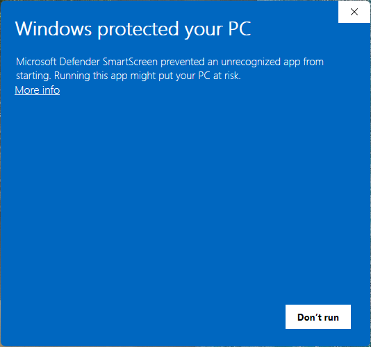
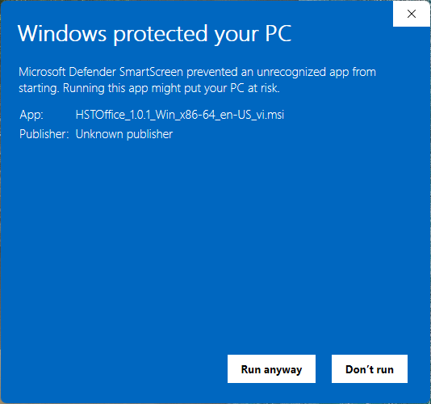
Muốn chắc tệp nguyên vẹn trước khi chạy, xem Kiểm tra bộ cài.
Máy Windows 11 bật Kiểm soát ứng dụng thông minh (Smart App Control) sẽ chặn bộ cài và báo lỗi 1603. Xem cách kiểm tra ở Gỡ lỗi khi cài đặt.
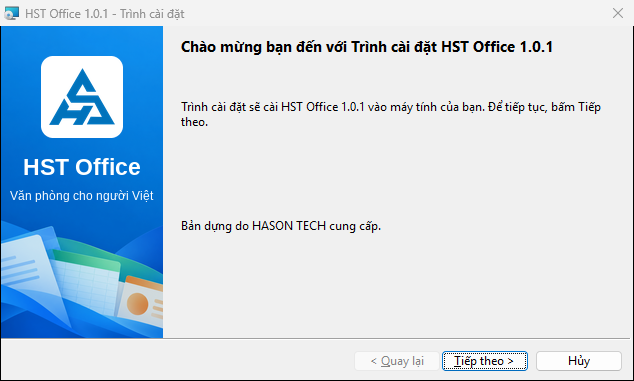
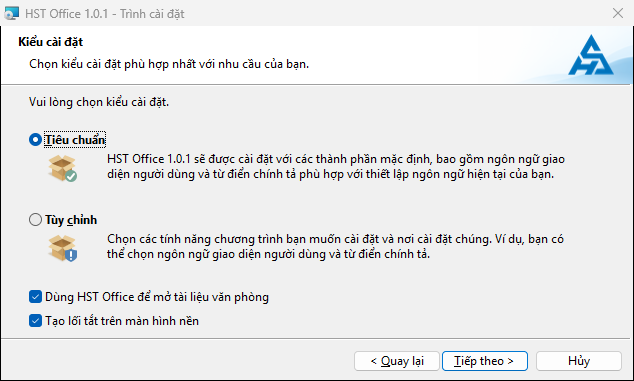
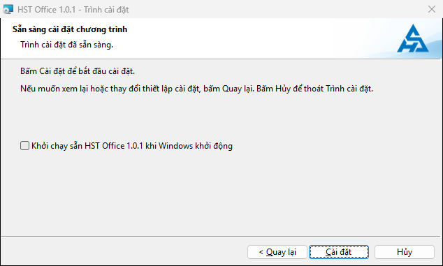
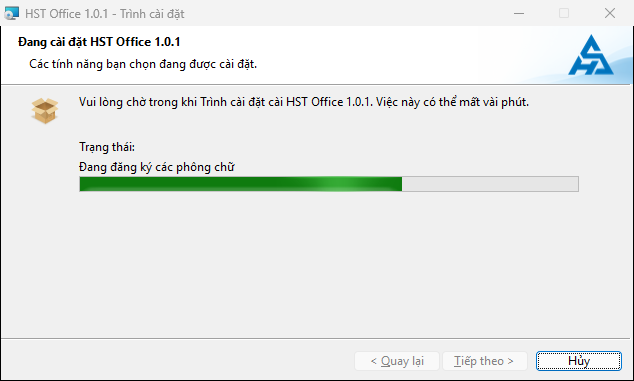
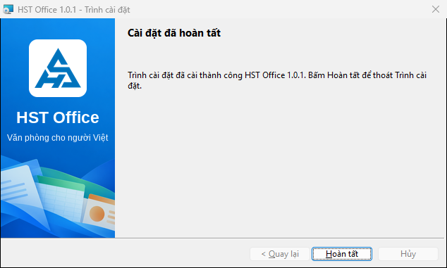
Máy đang có bản thử nghiệm cũ: bộ cài báo “Máy đang có bản HST Office thử nghiệm cũ. Bộ cài sẽ gỡ bản cũ rồi cài bản mới. Tài liệu của bạn không bị ảnh hưởng.” Cứ tiếp tục.
Mở HST Office, HST Writer, HST Sheets hoặc HST Slides từ menu Start hoặc lối tắt trên màn hình nền. Lần mở đầu tiên, hộp HST Office chào đón bạn hiện ra; bấm Đóng để bắt đầu làm việc. Xem tiếp Bắt đầu với HST Office.
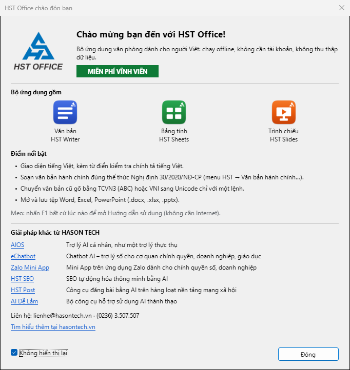
Chọn menu Apple ▸ Giới thiệu về máy Mac này (About This Mac).
Bấm Tải cho Apple Silicon hoặc Tải cho Intel bên dưới, theo chip của máy. Tệp tải về là {DMG_ARM} hoặc {DMG_INTEL}.
Nhấn đúp vào tệp .dmg. Trong cửa sổ hiện ra, kéo biểu tượng HST Office thả vào thư mục Applications (Ứng dụng).
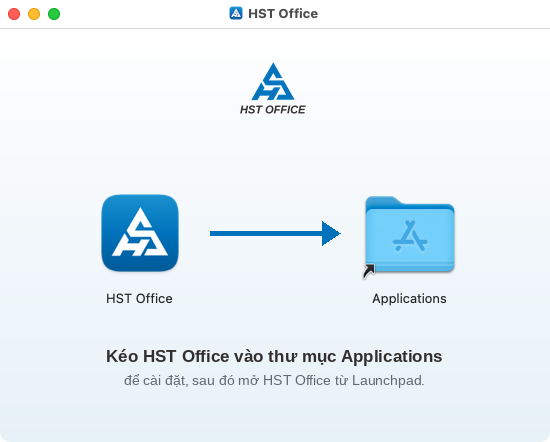
Mở HST Office từ Launchpad hoặc thư mục Ứng dụng. Lần đầu mở, macOS kiểm tra ứng dụng (dòng Verifying “HST Office”…), việc này có thể mất khoảng mười giây và chỉ xảy ra một lần.
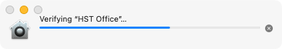
HST Office đã được Apple xác thực; sau khi kiểm tra, macOS hỏi bạn có chắc muốn mở ứng dụng tải từ Internet không: chọn Open (Mở).
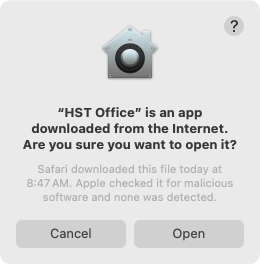
Hộp HST Office chào đón bạn hiện ra; bấm Đóng để bắt đầu làm việc.
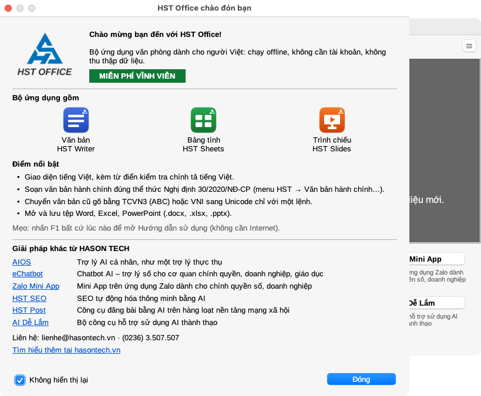
Nếu bạn mở HST Office thẳng từ tệp .dmg hoặc thư mục Tải về, HST Office hỏi Chuyển HST Office vào thư mục Ứng dụng?: chọn Chuyển. Chạy từ thư mục Ứng dụng thì mới cập nhật được bản mới. Sau khi cài xong, có thể đẩy đĩa .dmg ra (Eject).
Bấm Tải cho Linux bên dưới để tải tệp {DEB}.
Cách 1: nhấn đúp vào tệp .deb, chọn Cài đặt trong App Center, Software hoặc gdebi, rồi nhập mật khẩu máy khi được hỏi.
Cách 2: mở cửa sổ dòng lệnh trong thư mục chứa tệp vừa tải và chạy:
sudo apt install ./{DEB}Máy đã cài bản trước sẽ được nâng cấp; tài liệu và thiết lập giữ nguyên.
Mở HST Office trong menu ứng dụng, hoặc gõ hst-office trong cửa sổ dòng lệnh.
Gỡ HST Office không xóa các tài liệu bạn đã lưu.
sudo apt remove hst-office.Để chắc tệp tải về nguyên vẹn, tải tệp SHA256SUMS, tính mã SHA256 của bộ cài và đối chiếu với dòng có cùng tên tệp. Hai mã phải trùng hoàn toàn; nếu khác, hãy tải lại bộ cài.
certutil -hashfile {MSI} SHA256shasum -a 256 {DMG_ARM} (thay bằng tên tệp bạn tải)sha256sum {DEB}Đã cài xong? Xem Hướng dẫn sử dụng và cách cập nhật HST Office khi có bản mới.